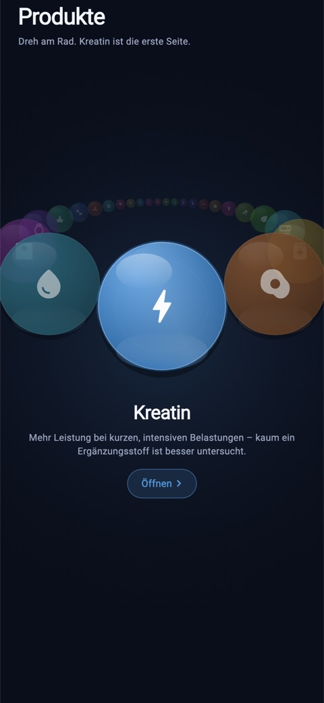
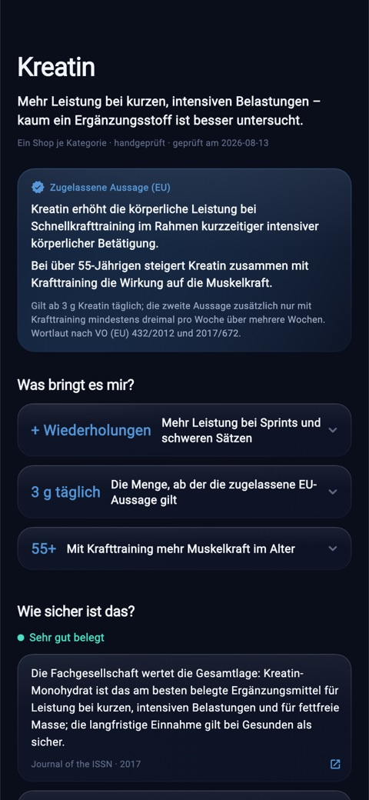

Kreatin.
Was belegt ist – und was nicht.
Mehr Leistung bei kurzen, intensiven Belastungen – kaum ein Ergänzungsstoff ist besser untersucht. Diese Seite ist die Web-Fassung der Wissensseite aus Young by You: dieselben Sätze, dieselben Quellen.
Sehr gut belegt · geprüft am 13. August 2026
Kreatin erhöht die körperliche Leistung bei Schnellkrafttraining im Rahmen kurzzeitiger intensiver körperlicher Betätigung.
Bei über 55-Jährigen steigert Kreatin zusammen mit Krafttraining die Wirkung auf die Muskelkraft.
Gilt ab 3 g Kreatin täglich; die zweite Aussage zusätzlich nur mit Krafttraining mindestens dreimal pro Woche über mehrere Wochen. Wortlaut nach VO (EU) 432/2012 und 2017/672.
Was bringt es mir?
Drei Punkte – jeder mit dem Grund darunter, nicht nur mit der Zahl.
Kreatin füllt den Phosphokreatin-Speicher im Muskel. Aus ihm wird bei Belastungen unter etwa zehn Sekunden die Energie nachgeliefert – deshalb wirkt Kreatin genau dort: beim Sprint, beim schweren Satz, im Intervall. Über Wochen summieren sich die zusätzlichen Wiederholungen zu mehr Kraft und Muskel. Für lange, gleichmäßige Ausdauer bringt der Speicher nichts – das steht deshalb unten bei „Was es nicht kann“.
Die Europäische Behörde für Lebensmittelsicherheit hat die Wirkung auf die Schnellkraft geprüft und die Aussage zugelassen – ab 3 g täglich, für Erwachsene mit intensiver körperlicher Betätigung. Das ist selten: Die allermeisten Nahrungsergänzungsmittel haben keine einzige zugelassene Wirkaussage.
Ab Mitte fünfzig geht Muskelkraft von allein verloren. Die zweite zugelassene EU-Aussage gilt genau hier: Kreatin verstärkt die Wirkung von Krafttraining auf die Muskelkraft bei über 55-Jährigen – Bedingung sind 3 g täglich und Training mindestens dreimal pro Woche über mehrere Wochen. Ohne das Training gilt auch die Aussage nicht.
Was es nicht kann
Die ehrliche Hälfte – wortgleich mit der App. Ein Mittel, das alles kann, gibt es nicht.
- Es ersetzt kein Training – ohne Trainingsreiz keine Anpassung.
- Es macht nicht schlank.
- Die Gewichtszunahme der ersten Wochen ist Wasser im Muskel, kein Muskel.
- Für reine Ausdauerleistung ist kein Vorteil belegt.
Wie nehme ich es?
- 3–5 g Kreatin-Monohydrat täglich – jeden Tag, auch an trainingsfreien.
- Der Zeitpunkt ist zweitrangig; entscheidend ist die Regelmäßigkeit.
- Eine „Ladephase“ ist möglich, aber nicht nötig – die Speicher sind nach 2–4 Wochen auch so gefüllt.
- Ausreichend trinken.
- Bei bestehender Nierenerkrankung vorher ärztlich klären.
Worauf achte ich beim Kauf?
- Kreatin-Monohydrat reicht – teurere Formen sind nicht besser belegt.
- Auf geprüfte Reinheit achten (z. B. Creapure® oder eine unabhängige Laboranalyse).
- Pulver wirkt gleich und kostet weniger als Kapseln.
- Mischungen mit Zucker oder „Booster“-Zusätzen braucht niemand.
Wie sicher ist das?
Drei Arbeiten, jede mit Ergebnis und Fundstelle. Wo die Lage offen ist, steht das da – auch wenn es unbequemer klingt.
International Society of Sports Nutrition position stand: safety and efficacy of creatine supplementation
Die Fachgesellschaft wertet die Gesamtlage: Kreatin-Monohydrat ist das am besten belegte Ergänzungsmittel für Leistung bei kurzen, intensiven Belastungen und für fettfreie Masse; die langfristige Einnahme gilt bei Gesunden als sicher.
Effect of creatine supplementation during resistance training on lean tissue mass and muscular strength in older adults
Meta-Analyse über 22 kontrollierte Studien mit älteren Erwachsenen: Wer zum Krafttraining Kreatin nahm, baute mehr fettfreie Masse und mehr Kraft auf als mit Training allein.
Effects of creatine supplementation on cognitive function – a systematic review and meta-analysis
Meta-Analyse randomisierter Studien: Das Gedächtnis verbesserte sich (mittlere Sicherheit der Belege), Aufmerksamkeit und Verarbeitungsgeschwindigkeit nur mit geringer Sicherheit. Ein Übersichtsartikel aus demselben Jahr hält die theoretische Grundlage dagegen für nicht gestützt – die Frage ist offen, und genau so steht sie hier.
So sieht das in der App aus
Kreatin ist die erste von 25 Kategorien im Rad. Ein Schalter oben rechts auf der Seite legt „Kreatin nehmen“ als Routine auf deine Startseite – abhaken bringt Punkte und Puzzleteile.


Kostenlos ausprobieren – 14 Tage die ganze App.
Nahrungsergänzungsmittel ersetzen keine ausgewogene Ernährung und keine gesunde Lebensweise. Diese Seite ist Information, keine Heilaussage und keine ärztliche Beratung; bei bestehenden Erkrankungen, in Schwangerschaft und Stillzeit sowie bei Kindern vorher ärztlich klären. Wirkaussagen sind ausschließlich die in der EU zugelassenen, samt Bedingung. Stand der Prüfung: 13. August 2026. Fragen oder ein Fehler entdeckt? hello@youngbyyou.com